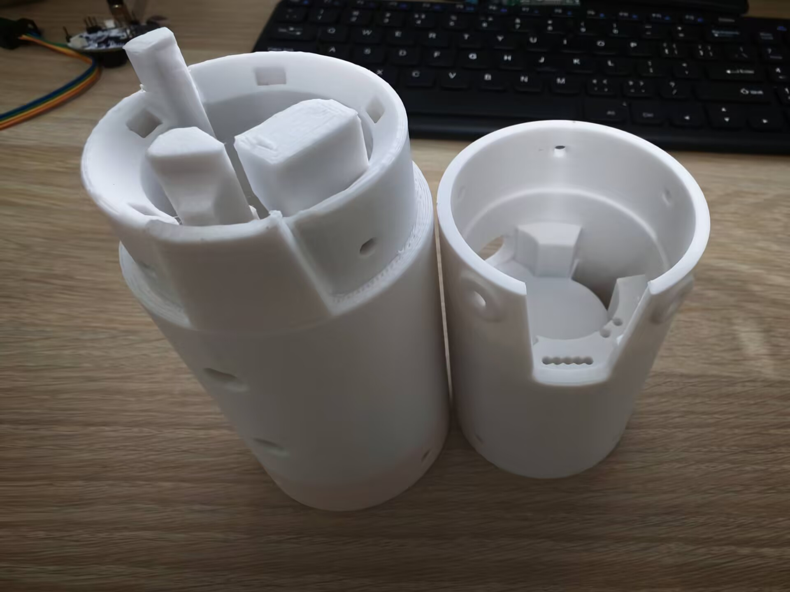

V2版本航电仓

文档AI等级：0
介绍
本航电仓是26年8月份为了适配V2版航电所设计的，内部包含了航电仓装配体，各个模型零件，外部参考零件和3D打印输出文件这三个文件夹。
舱室总体结构分为上部GPS舱段和下部PCB电池舱段，PCB刚性的被夹在两者之间，两个舱段采用M3螺丝连接，而和外部舱段采用M4螺丝连接。
使用solidworks2025建模，使用PETG作为打印材料
Notes
- 目前为了适配其他舱段的连接件，采用了非常薄的连接壁而且连接处只有四个M4螺丝固定，刚性存疑，需要重新评估其可靠性
- PCB通过公差配合的方式强行被夹在两个舱段之间，硬性连接，会导致PCB直接收到火箭箭体发射时的强振动，且硬性挤压可能会对PCB板产生伤害。
接口声明以及连接件规范化
与外部舱段的连接螺丝典型规格：M4 * 12mm 内部两个舱段连接螺丝典型规格：M3 * 10mm 扎带典型规格：
| 类型 | 典型规格 | 备注 |
|---|---|---|
| 与外部舱段的连接螺丝 | M4 * 12mm | 无 |
| 内部两个舱段连接螺丝 | M3 * 10mm | 无 |
| 扎带 | 4 * 200mm | 无 |